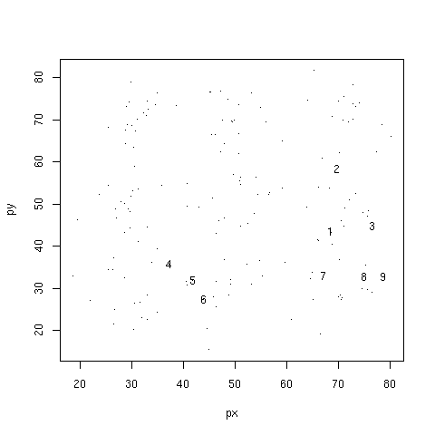
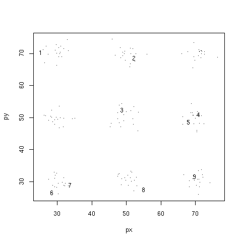
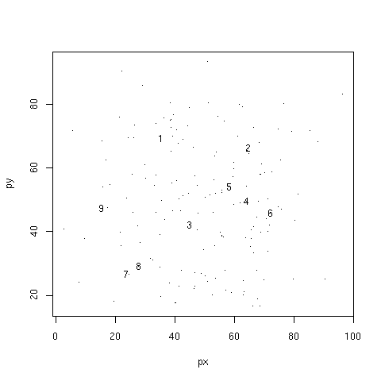
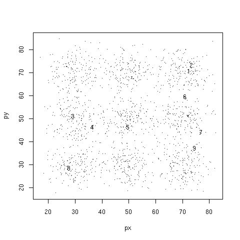

By the rule of thumb given above, we should look for sqrt(180/2) = 9.49 clusters. We will look for 9 clusters. Running the k-means algorithm gives the following centers:
In fact, the original collection of points was generated by a random process in which 9 specific points were chosen as the centers and 20 points were generated at random near each of the chosen centers (using a bivariate normal distribution with standard deviation 5). The actual centers are shown as X's in the following picture:
As you can see, the k-means algorithm found 5 of the 9 actual centers, but the other 4 computed centers are "rotated" relative to the actual centers.
point.
One then creates two new tables. The first table is for the centers. Call it center.
It has the same columns as point plus one additional column with an id.
The id is the primary key for center. The second table is for the
clusters. Call it cluster. It has the same columns as center,
but now the primary key consists of all of the columns other than the id column.
The cluster table specifies which cluster each point belongs to. For example,
if the point table has just two columns, named x and y,
then the three tables are:
create table point(x double, y double, primary key(x,y));
create table center(id int primary key, x double, y double);
create table cluster(id int references center(id)
on update no action on delete no action,
x double, y double,
primary key(x,y),
foreign key (x,y) references point(x,y)
on update no action on delete no action
);
The algorithm requires two update operations. The first computes the clusters using the points and centers. It has this form:
replace into cluster select ... from center c, point p where ...Note the use of
replace rather than insert because this update is
going to be applied more than once. Each time, it will replace the old clusters with new ones.
It is an exercise to design the query that computes the new clusters.
The second update computes the centers of the new clusters. It has this form:
replace into center select ... from cluster ...Again, use
replace rather than insert.
It is an exercise to design the query that computes the new centers.
These two updates are applied repeatedly. To look at the centers, use this query:
select * from centerAfter a few iterations, the centers will no longer change. At this point the algorithm has converged.
One can combine the two updates to a single update that computes the new centers in one step.
This technique avoids the need for the cluster table.
It is an exercise to design this update.

In the second animation, the standard deviation is 2 so the points are much more clustered near the actual centers. Nevertheless, the algorithm does not converge to the actual centers in all cases:

In the third animation, the standard deviation is 10 so the points are much less clustered. So it is not surprising that the actual centers are not found:

In the last animation, the standard deviation is again 5 but now there are 10 times as many points. With this additional data, the algorithm succeeds in finding the actual centers, but it takes longer to converge:

© 2010 Ken Baclawski. All rights reserved. Redistribution and use in source and binary forms, with or without modification, are permitted provided that redistributions and uses retain this copyright notice.